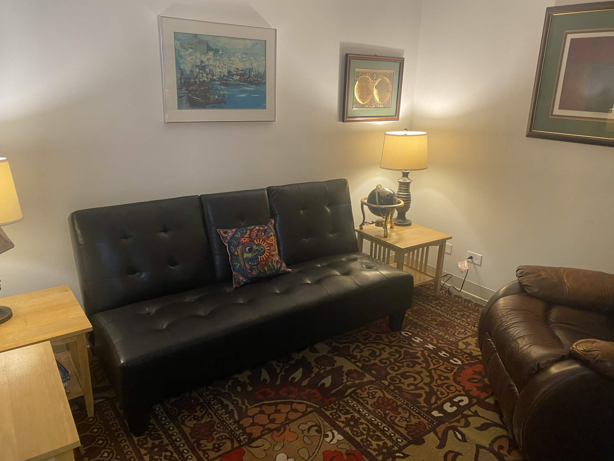

Anxiety & Stress
Slow down, understand your patterns, and build steadier ways to respond to anxiety, stress, and life’s pressures.
Individual Therapy • Mental Health Therapy • Chicago
Compassionate individual therapy and mental health therapy for adults in Chicago navigating stress, life transitions, emotional concerns, and self-understanding.
In the fast-paced world we live in, many of us react to stress rather than truly understanding it. Therapy offers a space to slow down, reflect, and reconnect with your authentic self.
About

I am a down-to-earth, empathetic, and compassionate therapist with nearly twenty years of experience supporting people in the mental health field.
Through compassionate exploration and guidance, we work together to better understand difficult emotions, explore painful experiences, and deepen your awareness of yourself and your relationships.
A Gentle Path Forward
Change often begins one step at a time. Together, we create space to understand what you are carrying, explore emotional growth, and consider new ways to relate to your experience.
Therapy Focus
Slow down, understand your patterns, and build steadier ways to respond to anxiety, stress, and life’s pressures.
Find individual therapy support through change, uncertainty, grief, identity shifts, and new beginnings.
Explore difficult experiences with trauma-informed care, compassion, and room for reflection and steadier coping.
Reflection & Renewal
Therapy is a place to reflect, listen inwardly, and begin to meet life with more compassion, steadiness, and self-understanding.
“Therapy is not about perfection. It may offer a place to slow down, reflect, and explore a more compassionate understanding of yourself.”

Accepting New Clients
Reach out to schedule a consultation or ask a question about beginning therapy.